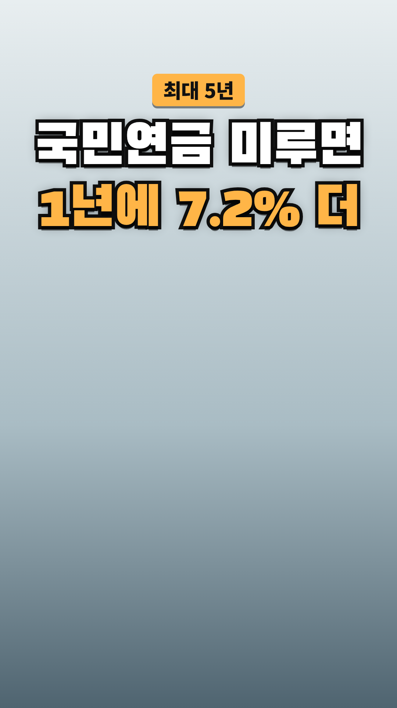

Vrew 작업 카드
2026-10-31-국민연금-연기연금 · 사실 검증과 업로드 전 점검을 통과한 회차입니다. 위에서부터 차례로 복사해 붙여넣으세요.
- 대본 붙여넣기 → AI 목소리(차분한 중년, 0.9~1.0배)
- 장면마다 AI 이미지 문구 복사 → 이미지 바꾸기
- 큰 글자가 있는 장면에 텍스트 추가
- 배경음악(오디오 보관함·Vrew 음원) → 내보내기 mp4
- 제목·설명란·고정댓글 복사해 업로드
0단계 · 첫 장면 강조 제목

Vrew 1번 장면 → 삽입 → 이미지 → 같은 폴더의 title-overlay.png(투명 배경) → 화면 전체 크기로 맨 위에 얹기. 1번 장면의 '큰 글자'는 이 이미지가 대신하므로 따로 넣지 않습니다. 아래 배경은 AI 이미지 자리 표시입니다.
1단계 · 대본
1. 대본 붙여넣기
Vrew → 새로 만들기 → 텍스트로 비디오 만들기 → 쇼츠 9:16 → 대본 칸에 붙여넣기
국민연금, 1년 미루면 7.2% 더 받아요. 받을 나이가 돼도 바로 받지 않고 받는 시기를 뒤로 미룰 수 있어요. 이걸 연기연금이라고 해요. 미룬 한 달마다 0.6%씩 붙어요. 최대 5년까지 미룰 수 있고 5년을 미루면 36%가 늘어나요. 다만 미루는 동안에는 그만큼 연금을 받지 못해요. 전부 미루기가 부담되면 연금의 일부만 미루는 방법도 있어요. 건강과 다른 소득에 따라 유리한지가 달라지니 꼭 따져 보세요. 개인 상황에 따라 다르니 전문가와 상담하세요.
2~3단계 · 장면별 이미지와 큰 글자
장면 1
나레이션국민연금, 1년 미루면 7.2% 더 받아요.
AI 이미지달력을 한 장 넘기며 미소 짓는 60대 한국인 남성, 위쪽은 흐린 벽과 창밖 하늘, 따뜻한 자연광, 사실적인 사진 스타일, 세로 9:16 구도, 화면에 글자 없음
큰 글자국민연금 미루면
1년에 7.2% 더
장면 2
나레이션받을 나이가 돼도 바로 받지 않고
AI 이미지거실에서 생일 케이크 앞에 앉은 60대 한국인 부부, 따뜻한 자연광, 사실적인 사진 스타일, 세로 9:16 구도, 화면에 글자 없음
장면 3
나레이션받는 시기를 뒤로 미룰 수 있어요.
AI 이미지탁상 달력 위에 놓인 앞으로 향한 종이 화살표, 숫자는 흐릿하게, 따뜻한 자연광, 사실적인 사진 스타일, 세로 9:16 구도, 화면에 글자 없음
장면 4
나레이션이걸 연기연금이라고 해요.
AI 이미지식탁에서 안내 책자를 읽는 60대 한국인 여성, 따뜻한 자연광, 사실적인 사진 스타일, 세로 9:16 구도, 화면에 글자 없음
큰 글자연기연금
장면 5
나레이션미룬 한 달마다 0.6%씩 붙어요.
AI 이미지탁자 위에 조금씩 높아지는 동전 더미 여러 개, 따뜻한 자연광, 사실적인 사진 스타일, 세로 9:16 구도, 화면에 글자 없음
큰 글자한 달 0.6%
장면 6
나레이션최대 5년까지 미룰 수 있고
AI 이미지다섯 개의 탁상 달력이 나란히 놓인 책상, 숫자는 흐릿하게, 따뜻한 자연광, 사실적인 사진 스타일, 세로 9:16 구도, 화면에 글자 없음
큰 글자최대 5년
장면 7
나레이션5년을 미루면 36%가 늘어나요.
AI 이미지점점 높아지는 나무 블록 계단, 밝은 탁자, 따뜻한 자연광, 사실적인 사진 스타일, 세로 9:16 구도, 화면에 글자 없음
큰 글자5년이면 36%
장면 8
나레이션다만 미루는 동안에는
AI 이미지창가에 앉아 생각에 잠긴 60대 한국인 남성, 따뜻한 자연광, 사실적인 사진 스타일, 세로 9:16 구도, 화면에 글자 없음
장면 9
나레이션그만큼 연금을 받지 못해요.
AI 이미지식탁 위 가계부와 빈 지갑을 바라보는 60대 한국인 부부, 따뜻한 자연광, 사실적인 사진 스타일, 세로 9:16 구도, 화면에 글자 없음
장면 10
나레이션전부 미루기가 부담되면
AI 이미지소파에 앉아 서로 이야기하며 고민하는 60대 한국인 부부, 따뜻한 자연광, 사실적인 사진 스타일, 세로 9:16 구도, 화면에 글자 없음
장면 11
나레이션연금의 일부만 미루는 방법도 있어요.
AI 이미지탁자 위 동전 더미를 두 무더기로 나누는 손, 따뜻한 자연광, 사실적인 사진 스타일, 세로 9:16 구도, 화면에 글자 없음
큰 글자일부만 미루기
장면 12
나레이션건강과 다른 소득에 따라
AI 이미지공원에서 산책하는 60대 한국인 부부, 따뜻한 자연광, 사실적인 사진 스타일, 세로 9:16 구도, 화면에 글자 없음
장면 13
나레이션유리한지가 달라지니 꼭 따져 보세요.
AI 이미지계산기와 메모지를 두고 계산하는 60대 한국인 남성, 따뜻한 자연광, 사실적인 사진 스타일, 세로 9:16 구도, 화면에 글자 없음
장면 14
나레이션개인 상황에 따라 다르니 전문가와 상담하세요.
AI 이미지상담 창구에서 상담원과 이야기하는 60대 한국인 부부, 따뜻한 자연광, 사실적인 사진 스타일, 세로 9:16 구도, 화면에 글자 없음
5단계 · 업로드 정보
제목
국민연금 1년 미루면 7.2% 더, 미루는 동안은 못 받아요
설명란
[음원] 칸은 고른 배경음악으로 채운 뒤 올리세요.
국민연금은 받을 나이가 된 뒤 받는 시기를 최대 5년까지 미룰 수 있어요. 이것을 '연기연금'이라고 해요. 미룬 한 달마다 0.6%(1년이면 7.2%)씩 연금액이 늘어나서, 5년을 미루면 36%가 늘어나요. 다만 미루는 동안에는 그만큼 연금을 받지 못해요. 전부 미루기가 부담되면 일부만 미루는 방법도 있으니, 건강과 다른 소득 상황을 함께 따져 보세요. [조금 더 자세히] - 일부 연기: 보건복지부 자료에 따르면 연금의 50%, 60%, 70%, 80%, 90% 중 하나를 골라 그 부분만 미룰 수 있고, 가산(늘어나는 몫)은 미룬 금액에만 붙어요. - 내 연금액과 받을 나이는 출생연도·가입 기간에 따라 다르니 국민연금공단(국번 없이 1355)에서 확인하세요. [출처] - 보건복지부 보도자료 「오늘부터 국민연금 일부연기 가능, 연기하면, 연간 7.2% 더 많은 금액 수령할 수 있다」(정책브리핑, 2015-07-28): https://www.korea.kr/briefing/pressReleaseView.do?newsId=156066395 - 정책브리핑 「"나중에 더 받자" 국민연금 재테크 인기」(위클리공감, 2016-10-07): https://www.korea.kr/news/policyNewsView.do?newsId=148822700 - 정책브리핑 「'3층연금'으로 노후 준비해요!」(2024-11-14): https://www.korea.kr/multi/visualNewsView.do?newsId=148936229 - 정책브리핑 국민이 말하는 정책 「노후 준비, 늦다고 생각할 때가 가장 빠르다」(2025-06-26): https://www.korea.kr/news/reporterView.do?newsId=148944977 - 보건복지부 보도참고자료 「노령연금 함께 받는 부부 93만 쌍 돌파」(2026-05-20): https://www.korea.kr/briefing/pressReleaseView.do?newsId=156762679 [음원] [Vrew 작업 후 vrew.md 음원 기록란에서 채우기] [안내] 이 영상은 정부 공개 자료를 바탕으로 한 일반 정보이며, 금융·세무·법률 상담을 대신하지 않습니다. 특정 금융상품이나 금융사를 추천하지 않습니다. 연기연금이 유리한지는 건강, 다른 소득, 가계 상황 등 개인 상황에 따라 다르니 국민연금공단에서 확인하시고 전문가와 상담하세요. 안내 내용은 2026년 10월 31일 열람 기준이며, 이후 제도가 바뀔 수 있어요. #쇼츠 #국민연금 #연기연금 #노후준비 #5060
고정댓글
연금 받을 나이가 되면 바로 받으실 건가요, 조금 미루실 건가요? 어떤 점을 따져 보셨는지 댓글로 나눠 주세요.
업로드 추천 시간: 저녁 8시